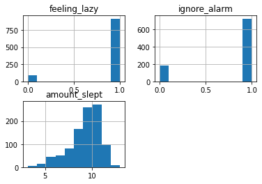
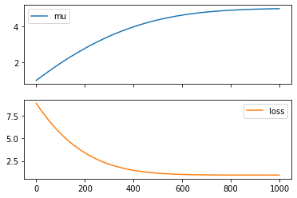

import pyro.distributions as dist
from pyro import sample
import torchPurpose
Following the blog post https://willcrichton.net/notes/probabilistic-programming-under-the-hood/
# A fair coin flip
coinflip = sample("coinflip", dist.Bernoulli(probs=0.5))
print(f'coinflip - {coinflip}')
# Noisy sample
noisy_sample = sample("noisy_sample", dist.Normal(loc=0, scale=1))
print(f'Noisy Sample - {noisy_sample}')coinflip - 1.0
Noisy Sample - -0.21278521418571472def sleep_model():
# very likely to feel lazy
feeling_lazy = sample('feeling_lazy', dist.Bernoulli(0.9))
if feeling_lazy:
# only going to possibly ignore alarm if I am feeling lazy
ignore_alarm = sample('ignore_alarm', dist.Bernoulli(0.8))
# will sleep more if Ignore alarm
amount_slept = sample(f'amount_slept', dist.Normal(8 + 2*ignore_alarm, 1))
else:
amount_slept = sample('amount_slept', dist.Normal(6, 1))
return amount_slept
print(sleep_model())
print(sleep_model())
print(sleep_model())
tensor(9.6567)
tensor(8.2041)
tensor(11.7966)Traces and conditioning
On the unconditional sleep model, we could ask a few questions, like:
- Joint probability of a sample: what is the probability that
feeling_lazy= 1,ignore_alarm= 0, amount_slept = 10? - Joint probability distribution: what is the probability for any possible assignment to all variables?
- Marginal probability of a sample: what is the probability that
feeling_lazyis true? - Marginal probability distribution: what is the probability over all values of
amount_slept?
First, we need the ability to evaluate the probability of a joint assignment to each variable.
from pyro.poutine import trace
from pprint import pprint# Runs the sleep model and collects a trace
tr = trace(sleep_model).get_trace()
pprint({
name: {
'value': props['value'],
'prob': props['fn'].log_prob(props['value']).exp()
}
for (name, props) in tr.nodes.items()
if props['type'] == 'sample'
}){'alarm_slept': {'prob': tensor(0.3937), 'value': tensor(7.8368)},
'feeling_lazy': {'prob': tensor(0.9000), 'value': tensor(1.)},
'ignore_alarm': {'prob': tensor(0.2000), 'value': tensor(0.)}}conditional probabilities
from pyro import condition
cond_model = condition(sleep_model, {
'feeling_lazy': torch.tensor(1.0),
'ignore_alarm': torch.tensor(0.0),
'amount_slept': 10.0
})
trace(cond_model).get_trace().log_prob_sum().exp()tensor(0.0303)Now we can produce an approximate answer to any of our questions by sampling from distribution enough times. For example, we can look at the marginal distribution over each variable
import pandas as pd
import matplotlib.pyplot as plt
traces = []
for _ in range(1000):
tr = trace(sleep_model).get_trace()
values = {
name: props['value'].item()
for (name, props) in tr.nodes.items()
if props['type'] == 'sample'
}
traces.append(values)
df = pd.DataFrame(traces)
df.hist()array([[<AxesSubplot:title={'center':'feeling_lazy'}>,
<AxesSubplot:title={'center':'ignore_alarm'}>],
[<AxesSubplot:title={'center':'amount_slept'}>, <AxesSubplot:>]],
dtype=object)
df.head(2)| feeling_lazy | ignore_alarm | amount_slept | |
|---|---|---|---|
| 0 | 1.0 | 1.0 | 10.285290 |
| 1 | 1.0 | 1.0 | 11.648011 |
Sampling conditional distributions
- Given I slept 6 hours, what is the probability I was feeling lazy?
- What is the probability of me sleeping exactly 7.65 hours
What is the problem with this? First, as the number of marginalized variables grows, we have an exponential increase in summation terms.
But the second issue is that for continuous variables, computing this marginal probability can quickly become intractable. For example, if feeling_lazy was a real-valued laziness score between 0 and 1 (presumably a more realistic model), then marginalizing that variable requires an integral instead of a sum. In general, producing an exact estimate of a conditional probability for a complex probabilistic program is not computationally feasible.
Approximate Inference
The main idea is that instead of exactly computing the conditional probability distribution (or “posterior”) of interest, we can approximate it using a variety of techniques. Generally, these fall into two camps: sampling methods and variational methods. The CS 228 (Probabilistic Graphical Models at Stanford) course notes go in depth on both (sampling, Variational)
Essentially, for sampling methods, you use algorithms that continually draw samples from a changing probability distribution until eventually they converge on the true posterior of interest. The time to convergence is not known ahead of time. For variational methods, you use a simpler function that can be optimized to match the true posterior using standard optimization techniques like gradient descent.
Where to use what? Please have a look at the original blog post.
Variational inference 1: autodifferentiation
norm = dist.Normal(0, 1)
x = sample('x', norm)
xtensor(-0.8995)However, let’s say I know the value of x = 5 and I want to find a mean μ to the normal distribution that maximizes the probability of seeing that x. For that, we can use a parameter:
from pyro import param
mu = param("mu", torch.tensor(0.0))
norm = dist.Normal(mu, 1)
x = sample('x', norm)Our goal is to update mu such that the probability of the value 5 under the normal distribution norm is maximized.
import torch.nn as nn
import torch.distributions as dist
from torch.optim import Adam
class NormalDistModel(nn.Module):
def __init__(self, mu):
super().__init__()
self.mu = nn.Parameter(torch.tensor(mu, dtype=torch.float32))
self.normal = dist.Normal(self.mu, 1)
def forward(self):
return self.normal.log_prob(torch.tensor(5.0))
model = NormalDistModel(1)
model.forward()tensor(-8.9189, grad_fn=<SubBackward0>)# lets now optimize the model to maximize the probabiliy of 5
optimizer = Adam(model.parameters(), lr=0.01)
mus = []
losses = []
for _ in range (1000):
# instead of maximizing the probablity, we minize the negative log of the probability
loss = -model.forward()
loss.backward()
# update parameters
optimizer.step()
# zero all parameter gradients so that they do not accumulate
optimizer.zero_grad()
# record the mu and the and the loss
losses.append(loss.detach().item())
mus.append(model.mu.detach().item())
df = pd.DataFrame({"mu": mus, "loss": losses})
df.plot(subplots=True)array([<AxesSubplot:>, <AxesSubplot:>], dtype=object)